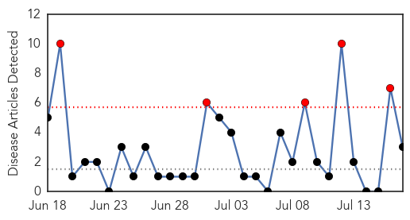
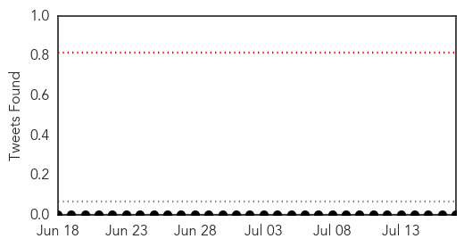
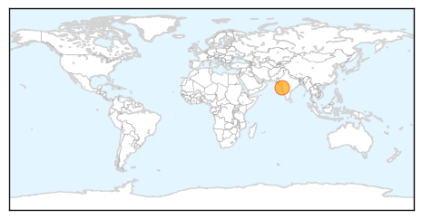

Swine Flu
30-Day Web Trend
5 alerts, 0 warnings

30-Day Twitter Trend
0 alerts, 0 warnings

Article Locations
Article Confidences

Top Articles:
Top Tweets:
-
No tweets found for Jul 17, 2015
Dengue Fever
30-Day Web Trend
30-Day Twitter Trend
2 alerts, 0 warnings

Article Locations

Article Confidences

Top Articles:
- 0.999
- Senators focus in on recent dengue fever cases
- 0.993
- Administration gears up to combat dengue
- 0.979
- Dengue cases jump 40%, hospitals shut doors in Bengaluru
- 0.977
- Visterra Announces Publication in the Journal Cell, Demonstrating That Novel Antibody, VIS513, Broadly Neutralizes All Four Serotypes of Dengue Virus in Preclinical Studies
- 0.961
- Monsoon-related ailments on rise
- 0.905
- MLAs give Khader a tongue-lashing over rising dengue cases in State
- 0.905
- MLAs give Khader a tongue-lashing over rising dengue cases in State
- 0.888
- Khader has tough time over rising dengue cases
- 0.824
- ‘Liaise with other agencies in dengue prevention’
- 0.764
- Nadda visits Safdarjung to assess dengue outbreak preparedness
- 0.635
- On surprise visit to Safdarjung Hospital Shri Nadda reviews Dengue preparedness
- 0.619
- Health Minister JP Nadda visits Safdarjung hospital to assess dengue outbreak preparedness
- 0.543
- Plans to curb dengue epidemic outdated, says expert
- 0.508
- Free foreign medical service
Top Tweets:
-
No tweets found for Jul 17, 2015